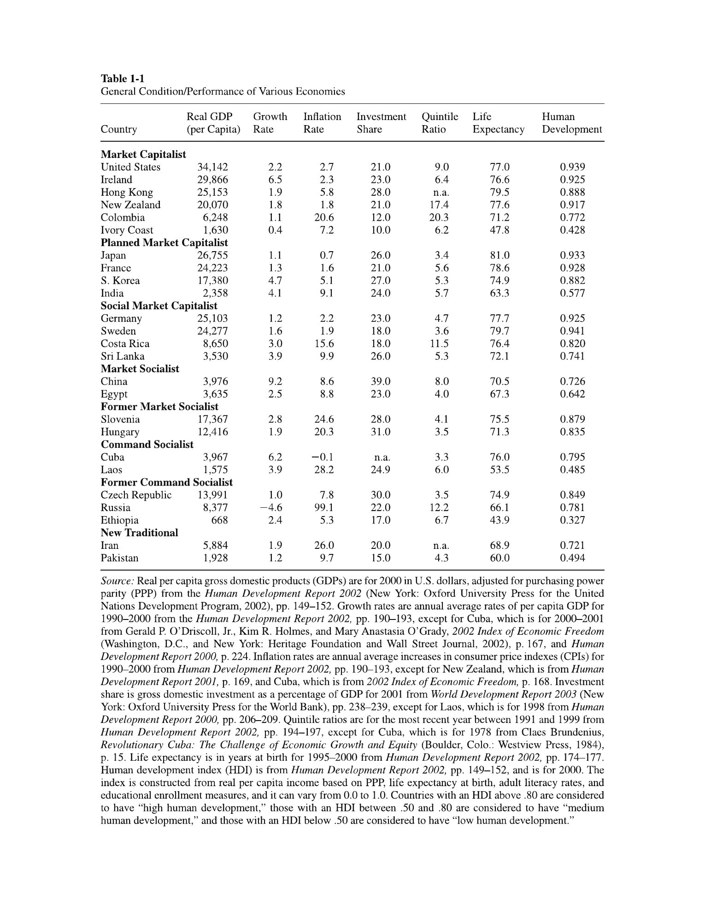
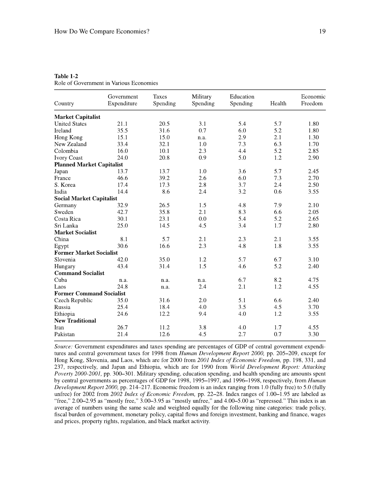

Compare performance with explicit criteria and qualified evidence
Explanation, worked examples and practice
Useful first: Classify economic systems across distinct dimensions
Outcome and conditions
For given historical or hypothetical indicators, choose and name the nine performance criteria, distinguish average output, distribution and static/dynamic efficiency, interpret a Lorenz area ratio, and state precisely why a ranking or causal claim exceeds the evidence.
Study conditions, assessment scope and sources
Essential criterion components are C1 performance criteria, C2 Lorenz and Gini, C3 dated units and causal limits. Primary finished-note locations: Comparing performance: define the outcome first; Reading the chapter's evidence; Why a striking comparison may still mislead.
Instruction and supported practice may use the selected notes. Independent checks are closed-note: show the stated prompt and its supplied data only, with no explanation, model answer, hints, web search, other people, AI help, or solution-bearing figure access before the response. A simple calculator is allowed for arithmetic after the learner states the reasoning; no symbolic or generative tools. If notes, item keys, or matching solutions were accessed, record the exposure and do not call that attempt independent. No timing or confidence threshold replaces a complete answer. No integration formula, contemporary index methodology or causal identification technique is added; area values are supplied and only the note-supported ratio is required.
Prerequisites and checks
Check the prerequisites
O001 is necessary because categories of institutions must be distinguished from outcomes. O002-P1 / 1: “A public firm has higher output per person than a private firm. Which is an institutional feature and which an outcome? Does ownership identify the cause?” Key: public/private is ownership; per-person output is an outcome; the pair does not isolate causation. Pass requires all three; partial misses a distinction; fail says output defines ownership or proves the effect. Repair: O001 definitions/W1, then return here. Current committed O001 acquisition permits skipping this check.
For every P diagnostic, ask before exposing its key. Pass requires all explicitly requested distinctions and their reasons; partial means a correct part with an omission or local arithmetic slip; fail means the essential prerequisite mechanism is contradicted. Unknown help or no answer is unscorable. Diagnostics are brief route selection only and never acquisition evidence. Apply the named repair once, then instruction rather than repeat-testing.
Motivation, intuition, and definitions
“Better” needs a criterion. The nine are output per person; per-person growth; composition of output; static efficiency; dynamic efficiency; macroeconomic stability; individual economic security; equity; and freedom. Static efficiency concerns available resources/technology now, including the Pareto no-uncompensated-improvement idea; dynamic efficiency concerns decisions and future output, as with oil extraction. Pareto efficiency does not imply equity. A Lorenz curve has cumulative population ordered poorest to richest horizontally and cumulative income vertically. The equality line is 45 degrees; a curve farther below it is more unequal. Gini is the gap area divided by the area under the equality line, ranging 0 to the limiting 1. It describes a distribution, not its justice or cause.
Explanation steps
- State the outcome, denominator and period before ranking. Growth in total output is not per-person growth if population changes. Composition, stability, security and freedom are not captured by average GDP.
- Read units and footnotes: Rosser Table 1-1 mostly uses GDP per person in 2000 and rates over 1990–2000, with exceptions. HDI is the historical source’s income/longevity/literacy/enrollment combination on 0–1. Table 1-2 spending entries are percentages of GDP; its Economic Freedom Index runs 1 freer to 5 less free. These are dated definitions/data.
- Calculate Gini using consistent area units, then interpret the inequality direction; no absolute income or moral judgment follows.
- Compare criteria without inventing weights: US/Sweden may rank differently on GDP, HDI and quintile ratios. The notes reject an inevitable equality–growth trade-off; historical examples do not estimate a redistribution policy effect.
- Audit comparability: German NMP differs from GNP and conversion rates change re-estimates. Austria–Czechoslovakia GDP units are 1990 international Geary–Khamis dollars, and the post-dissolution series labeling is unexplained. Dated/missing/mixed-quality data and historical differences prevent an isolated causal estimate. The article’s offender/relative arithmetic concerns possible instances rather than observed penalties.
- Historical growth accounts involve subsistence limiting investment, catch-up adopting existing technology, and frontier innovation; command growth/stagnation and stability claims have exceptions. Treat them as source mechanisms/tendencies, not predictions from a label.
Read the full explanation
Reading context
Deliver these complete reused passages before the worked example; earlier concise prompts are checkpoints, not substitutes. Necessary prerequisites use the complete prepared lessons specified above.
Source passage
Origin: reused complete checked passage Comparing performance: define the outcome first; fingerprint 8764485b6a043a0bcf7003eea29bf86eaa00b3cb42d43f2fde4d15cb696a2778. Heading depth and required relative figure-path relocation alone are adapted.
Comparing performance: define the outcome first
Rosser and Rosser use nine evaluation criteria drawn from Bornstein. Output level is real output per person, adjusted for population and prices; it approximates average material living standards, not distribution or freedom. Growth is the change in output per person, so population growth must be removed before comparing living standards over time. Composition asks what is produced and how much output goes to consumption, investment, military use, or public goods. Static efficiency concerns using available resources and technology well at a point in time; Pareto efficiency means no feasible reallocation makes someone better off without making someone else worse off. It does not imply an equitable distribution. Dynamic efficiency concerns choices over time, including whether current extraction or investment undermines future output; the chapter's Soviet oil-well example illustrates the distinction from maximizing current production. Rosser & Rosser, PDF pp. 13–15 (printed pp. 15–17)
The growth criterion needs a mechanism as well as a rate. Rosser and Rosser argue that the poorest economies may have too little surplus after subsistence consumption to invest, while economies that have escaped that trap can adopt existing frontier technology and catch up. The richest economies must push the technological frontier itself, so their growth opportunity differs. The chapter says command socialist systems sometimes achieved rapid growth for extended periods but tended toward longer-run stagnation. These are historical tendencies in the authors' account, not predictions from a country's label alone. Rosser & Rosser, PDF p. 14 (printed p. 16)
The remaining criteria are macroeconomic stability of output, employment, and prices; individual economic security, including jobs and health care; equity in income and wealth; and freedom to work, consume, own, invest, and exercise civil and political rights. Rosser and Rosser say strict command systems are often credited with short-run stability, but note major exceptions, including instability in surviving command systems after the Soviet breakup. A country can score differently on each criterion. A single ranking therefore requires value judgments about how to weigh these outcomes. The book also cautions against assuming an unavoidable equality–growth trade-off: it gives historical examples of relatively equal, fast-growing economies and unequal, slow-growing ones. Those examples question a simple rule; they do not prove that any specific redistribution policy raises growth. Rosser & Rosser, PDF pp. 10–11, 15 (printed pp. 12–13, 17)
Reading the chapter's evidence

Table 1-1 lists 25 economies grouped by the book's system categories. Its indicators include purchasing-power-adjusted GDP per person in 2000, annual average per-person growth and consumer-price inflation generally over 1990–2000, investment share, a top-to-bottom income-quintile ratio, life expectancy, and the Human Development Index (HDI). The HDI combines real income per person, life expectancy, adult literacy, and educational enrollment on a 0–1 scale, with higher values indicating greater measured development. Read the footnote before treating columns as simultaneous: Cuba's growth covers 2000–01, New Zealand's and Cuba's inflation use other sources or periods, and several other indicators have different reference years. The table is a dated cross-country comparison with missing values and mixed measurement quality; it cannot by itself isolate the effect of an allocation or ownership rule. Rosser & Rosser, PDF pp. 15–16 (printed pp. 17–18), Table 1-1 and source note

Table 1-2 reports central-government expenditure and taxes, plus central-government military, education, and health spending, each as a percentage of GDP. It also gives an Economic Freedom Index whose source scale runs from 1 (freer) to 5 (less free). Its columns draw on different years, as the source note explains; the values should not be read as current or perfectly synchronized. For a concrete comparison, Table 1-1 gives 2000 GDP per person of \(\$34{,}142\) for the United States and \(\$24{,}277\) for Sweden, but similar HDI values of \(0.939\) and \(0.941\) and different top/bottom quintile ratios of \(9.0\) and 3.6. Table 1-2 reports central-government expenditure of \(21.1\%\) and \(42.7\%\) of GDP, respectively, in its source period. The pair illustrates how rankings vary by criterion and institutional arrangement; it does not establish that spending caused the observed HDI or distribution. Rosser & Rosser, PDF pp. 16–17 (printed pp. 18–19), Tables 1-1 and 1-2 with source notes

Figure 1-1 plots cumulative population ranked from poorest to richest on the horizontal axis against cumulative national income on the vertical axis. Equal income would trace the 45-degree line; a curve farther below it indicates greater inequality. The Gini coefficient is defined as the area between the equality line and a country's Lorenz curve divided by the whole area under the equality line, ranging from 0 (equal) toward 1 (maximally unequal in the limiting case). This converts the picture to one number, but neither the curve nor Gini identifies why inequality arose or whether an observed distribution is just. The figure's named countries and data are historical. Rosser & Rosser, PDF pp. 18–19 (printed pp. 20–21), Figure 1-1
The chapter explicitly warns that data may be especially weak in poorer countries and in former command systems, where secrecy, reporting incentives, and later revisions complicate comparisons. System classifications themselves are partly arbitrary: openness, industry structure, law, corruption, trust, population density, and other features can matter even when two countries share a headline label. Use the tables to form precise questions, not to treat a category average as a causal estimate. Rosser & Rosser, PDF pp. 18–19 (printed pp. 20–21)
Source passage
Origin: reused complete checked passage Reading the chapter's evidence; fingerprint 8764485b6a043a0bcf7003eea29bf86eaa00b3cb42d43f2fde4d15cb696a2778. Heading depth and required relative figure-path relocation alone are adapted.
Reading the chapter's evidence
Table 1-1 lists 25 economies grouped by the book's system categories. Its indicators include purchasing-power-adjusted GDP per person in 2000, annual average per-person growth and consumer-price inflation generally over 1990–2000, investment share, a top-to-bottom income-quintile ratio, life expectancy, and the Human Development Index (HDI). The HDI combines real income per person, life expectancy, adult literacy, and educational enrollment on a 0–1 scale, with higher values indicating greater measured development. Read the footnote before treating columns as simultaneous: Cuba's growth covers 2000–01, New Zealand's and Cuba's inflation use other sources or periods, and several other indicators have different reference years. The table is a dated cross-country comparison with missing values and mixed measurement quality; it cannot by itself isolate the effect of an allocation or ownership rule. Rosser & Rosser, PDF pp. 15–16 (printed pp. 17–18), Table 1-1 and source note
Table 1-2 reports central-government expenditure and taxes, plus central-government military, education, and health spending, each as a percentage of GDP. It also gives an Economic Freedom Index whose source scale runs from 1 (freer) to 5 (less free). Its columns draw on different years, as the source note explains; the values should not be read as current or perfectly synchronized. For a concrete comparison, Table 1-1 gives 2000 GDP per person of \(\$34{,}142\) for the United States and \(\$24{,}277\) for Sweden, but similar HDI values of \(0.939\) and \(0.941\) and different top/bottom quintile ratios of \(9.0\) and 3.6. Table 1-2 reports central-government expenditure of \(21.1\%\) and \(42.7\%\) of GDP, respectively, in its source period. The pair illustrates how rankings vary by criterion and institutional arrangement; it does not establish that spending caused the observed HDI or distribution. Rosser & Rosser, PDF pp. 16–17 (printed pp. 18–19), Tables 1-1 and 1-2 with source notes
Figure 1-1 plots cumulative population ranked from poorest to richest on the horizontal axis against cumulative national income on the vertical axis. Equal income would trace the 45-degree line; a curve farther below it indicates greater inequality. The Gini coefficient is defined as the area between the equality line and a country's Lorenz curve divided by the whole area under the equality line, ranging from 0 (equal) toward 1 (maximally unequal in the limiting case). This converts the picture to one number, but neither the curve nor Gini identifies why inequality arose or whether an observed distribution is just. The figure's named countries and data are historical. Rosser & Rosser, PDF pp. 18–19 (printed pp. 20–21), Figure 1-1
The chapter explicitly warns that data may be especially weak in poorer countries and in former command systems, where secrecy, reporting incentives, and later revisions complicate comparisons. System classifications themselves are partly arbitrary: openness, industry structure, law, corruption, trust, population density, and other features can matter even when two countries share a headline label. Use the tables to form precise questions, not to treat a category average as a causal estimate. Rosser & Rosser, PDF pp. 18–19 (printed pp. 20–21)
Source passage
Origin: reused complete checked passage Why a striking comparison may still mislead; fingerprint 8764485b6a043a0bcf7003eea29bf86eaa00b3cb42d43f2fde4d15cb696a2778. Heading depth and required relative figure-path relocation alone are adapted.
Why a striking comparison may still mislead

Austria–Czechoslovakia comparison. The chart plots GDP per person in 1990 international Geary–Khamis dollars over 1820–2010 using the Maddison Project 2013 version. The visible gap later in the series motivates a question about divergent institutions and systems. It does not isolate a causal effect of socialism: war, borders, industrial structure, measurement, and other historical differences also require analysis. The slide retains a “Czecho-slovakia” series for 2000 and 2010, after the state's dissolution, without explaining how those observations were constructed. Read its units, source date, and this labeling limit before using it as evidence. Week I lecture, PDF slide 40

Germany measurement example. For 1950–1989, the slide reports West German GNP and GNP-per-person growth figures of \(4.2\) and \(3.6\), while its East German official NMP series reports \(5.6\) and 5.9. Two re-estimates of East German GNP using different 1989 Mark/DM conversions report \(1.6\)/\(1.9\) and \(-2.2\)/\(-1.9\) respectively. The table's labels do not print a unit for these rates, and NMP and GNP are different aggregates. The key lesson is sensitivity to accounting and conversion, not a precise uncontested ranking from unlike numbers. Week I lecture, PDF slide 41, table attributed there to Pohl (1991)
The lecture surveys geography, culture, and leaders' ignorance as proposed explanations of prosperity, then poses Nogales and other counterexamples to simple one-factor accounts. It argues that trust and cooperation can themselves be shaped by institutions. These examples show why competing explanations must be examined; they do not mean geography or culture never matters. The Nogales and colonial-history note explains the uploaded chapter's own evidence and its limits in detail. Week I lecture, PDF slides 37–43
Finally, the lecture's Lagos insecurity scenario, Adam Smith quotation, and China discussion all point to the same decision mechanism: if property claims, contract enforcement, or predictable treatment are doubtful, an investor has reason to protect or conceal resources, seek personal connections, or use shorter-horizon opportunities. The China slide specifically names inconsistent rules, weak independent judicial checks, and reliance on guanxi networks; those are lecturer claims for discussion, not a blanket characterization of every Chinese transaction. The uploaded Roland chapter explains the contracting problems behind that intuition. Week I lecture, PDF slides 46–52 Institutions and economic development

The lecture's final example is a screenshot of a September 2024 article describing a debated practice in which a relative's conviction can restrict access to certain public jobs, university programs, or military service. It illustrates an indirect effect of legal rules on people who were not convicted and why households may care about predictability and equal application. The screenshot reports nearly 25 million recorded offenders during 2000–2022 and states that some 100 million people could be at risk if each has three affected relatives. That multiplication gives about 75 million relative instances before any overlap; the article does not explain the difference. Neither number is an observed count of people actually penalized. The slide presents this as an article excerpt, not as independently verified course data. Week I lecture, PDF slide 52
Worked example
O002-W1
Item/version: O002-W1 / 1. Role: worked example. Components: C1 performance criteria, C2 Lorenz and Gini, C3 dated units and causal limits.
Prompt: Use the note’s historical US/Sweden pair: GDP/person \(\$34{,}142\)/\(\$24{,}277\) in 2000; HDI \(0.939\)/\(0.941\); top/bottom income-quintile ratio \(9.0\)/\(3.6\); central spending \(21.1\%\)/\(42.7\%\) GDP from Table 1-2’s source period. Add a hypothetical Lorenz gap area \(0.15\) with equality-triangle area \(0.50\). Interpret all nine performance criteria and the data limits.
Prepared key and essential reasoning: GDP ranks US higher in average material output; HDI and quintile ratios favor Sweden on measured development/equity; spending is an institutional/fiscal indicator, not proof of its effect. Nine criteria remain output, per-person growth, composition, static efficiency, dynamic efficiency, stability, security, equity and freedom; unreported criteria cannot be ranked. \(\mathrm{Gini}=0.15/0.50=0.30\), descriptive inequality. Axes are cumulative poorest-to-richest population and income; lower curves mean more inequality. Static efficiency is present use, dynamic future consequences; neither is established by GDP or Gini. Different dates, definitions and confounders forbid “spending caused HDI.” The source’s freedom scale runs downward toward greater freedom, and the historical data are not current.
Item decision: Pass requires every listed component in the key with no critical error. Partial means some valid reasoning but a missing essential component or a local slip; fail means the defining mechanism is wrong. Accept paraphrase and different examples only where explicitly allowed by the key.
Practice with fading assistance
Write your reasoning, then reveal the complete key to check each step.
A local draft for your own study.
Reveal explanation
Prepared key and essential reasoning: Ginis are \(0.20\)/\(0.40\); Q is more unequal on these distributions. Nine criteria: output, per-person growth, composition, static/dynamic efficiency, macro stability, individual security, equity, freedom. Equality in output leaves the others open. Static concerns current use; dynamic future consequences; neither implies fairness. Need matching price/population/period definitions, with historical indicators not live data. The pair does not isolate institutional cause; weighting outcomes is a value choice.
Item decision: Pass requires every listed component in the key with no critical error. Partial means some valid reasoning but a missing essential component or a local slip; fail means the defining mechanism is wrong. Accept paraphrase and different examples only where explicitly allowed by the key. Notes allowed. Hint 1: Name the horizontal and vertical Lorenz axes before dividing areas. Hint 2: Separate the outcome ranking from the reason for that outcome. Then show the worked step if still stuck; this response cannot establish independence.
A local draft for your own study.
Reveal explanation
Prepared key and essential reasoning: Nine: output, per-person growth, composition, static/dynamic efficiency, macro stability, individual security, equity, freedom. Static concerns current resource/technology use; dynamic future output; Pareto does not mean equal. US higher GDP; Sweden higher HDI/lower quintile disparity; other criteria unranked. Gini \(.40\); cumulative poorest-to-richest population \(x\)/income \(y\), lower curve more inequality; no justice/cause inference. Data are historical/mixed periods; spending %GDP differs from outcome; freedom index 1 freer/5 less free. No controlled spending or ownership effect is isolated, and weighting criteria is a value decision.
Item decision: Pass requires every listed component in the key with no critical error. Partial means some valid reasoning but a missing essential component or a local slip; fail means the defining mechanism is wrong. Accept paraphrase and different examples only where explicitly allowed by the key.
A local draft for your own study.
Reveal explanation
Prepared key and essential reasoning: Nine as above; A wins stated per-person growth, B employment stability, B’s lower curve means greater inequality with Gini \(.50\). Equal GDP leaves composition, efficiency, security and freedom unmeasured; static/current and dynamic/future efficiency cannot be inferred, and equity differs from Pareto efficiency. No “best” ranking without value weights. NMP/GNP are unlike aggregates; table units are not printed and conversion/re-estimates change comparison; historical/mixed data do not identify causation. Freedom-index 1 freer to 5 less free. Need matching units/periods and contextual causes.
Item decision: Pass requires every listed component in the key with no critical error. Partial means some valid reasoning but a missing essential component or a local slip; fail means the defining mechanism is wrong. Accept paraphrase and different examples only where explicitly allowed by the key.
Rubric and independence
Self-assessment criteria and tutor checks
The prepared keys operationalize each component; all are essential. Pass requires an explicit mechanism and justified application plus every specified limit. Partial applies to an incomplete argument or isolated arithmetic transcription error with otherwise correct setup; teach gives feedback and obtains a fresh check. An arithmetic slip is not itself proof of conceptual failure, but a numerically wrong result does not count as a complete pass. Fail applies to any critical conceptual error identified below. Unscorable applies to missing response or ambiguous/unknown help conditions; do not infer acquisition.
Full role coverage: I1, I2, D1, and D2 each test all components C1 performance criteria, C2 Lorenz and Gini, C3 dated units and causal limits. Normal acquisition is two distinct passes on I1 and I2, same revision/criterion and known unassisted conditions. Permitted repair/entry substitution: use a previously unseen D1 or D2 as a full_scope_independent check; record that immediate use explicitly and do not count it as delayed retention. Only combinations of two different unexposed I/D items are permitted. Supported, worked, diagnostic, and C items do not fill this role. Correction items are deliberately narrower and cannot substitute for acquisition or delayed checks. If both delayed variants are consumed during repair, request new prepared delayed items from plan before claiming delayed readiness.
Each delayed pass independently requires the same entire criterion after at least 24 elapsed hours from the last instruction/solution exposure for this objective, with current tuple, fresh item and known intervening exposure. The 24-hour guard is an operational minimum; recall owns dates. A previously seen question can be used for practice only.
Misconceptions and correction
Observable sign: Learner says a lower Lorenz curve means less inequality or confuses GDP with distribution. A single response supports a tentative diagnosis; it becomes established only with corroborating reasoning, never from hesitation alone. Corrective explanation: Cumulative income of the poorest shares is smaller when the curve is lower; its gap from equality is larger. GDP per person is an average and cannot identify distribution. Hint 1: Name the distinction being tested. Hint 2: Compare the alternatives using the supplied definitions; after two ineffective hints show the relevant worked step.
O002-C1
Item/version: O002-C1 / 1. Role: fresh correction; practice only. Components: C2 Lorenz and Gini.
Prompt: Fresh correction: same GDP, gap \(.18\) over \(.50\) versus \(.08\) over .50. Which Gini is larger and what does it say?
Prepared key and essential reasoning: \(.36\) versus \(.16\); first is more unequal, not necessarily poorer on average or unjust by definition.
Item decision: Pass requires every listed component in the key with no critical error. Partial means some valid reasoning but a missing essential component or a local slip; fail means the defining mechanism is wrong. Accept paraphrase and different examples only where explicitly allowed by the key.
Observable sign: Learner calls a table ranking a causal effect or equates NMP/GNP. A single response supports a tentative diagnosis; it becomes established only with corroborating reasoning, never from hesitation alone. Corrective explanation: A comparison must align aggregates/units/periods before even describing differences; other historical factors remain. Hint 1: Name the distinction being tested. Hint 2: Compare the alternatives using the supplied definitions; after two ineffective hints show the relevant worked step.
O002-C2
Item/version: O002-C2 / 1. Role: fresh correction; practice only. Components: C3 dated units and causal limits.
Prompt: Fresh correction: one chart uses a historical GDP series and labels a dissolved state after dissolution. What two checks precede a causal claim?
Prepared key and essential reasoning: Check construction of the post-dissolution observations and comparable units/periods; then assess historical confounders rather than infer cause from the gap.
Item decision: Pass requires every listed component in the key with no critical error. Partial means some valid reasoning but a missing essential component or a local slip; fail means the defining mechanism is wrong. Accept paraphrase and different examples only where explicitly allowed by the key.
Immediate and delayed checks
I1/I2 above are separate immediate forms. Ask delayed forms before showing any recap, explanation or solution. The D forms are parallel or near-transfer applications of the stated mechanism; different contexts/numbers do not prove broad transfer or whole-course mastery. Record item version, help, elapsed time, and intervening exposure.
A local draft for your own study.
Reveal explanation
Prepared key and essential reasoning: Nine performance criteria as above; R output ranking, S measured development/equity ranking; S Gini \(.10\), axes cumulative poorest-to-richest population/income, higher curve nearer equality. Historical HDI uses income, life expectancy, literacy/enrollment; it omits many criteria. Static/current use and dynamic/future consequences differ and neither guarantees equity. Need values to aggregate criteria. Chart is historical in 1990 international Geary–Khamis dollars, Maddison 2013 series; post-dissolution labeling unexplained; war, borders/industry/measurement confound inference. Freedom index 1 freer/5 less free; no isolated socialism effect.
Item decision: Pass requires every listed component in the key with no critical error. Partial means some valid reasoning but a missing essential component or a local slip; fail means the defining mechanism is wrong. Accept paraphrase and different examples only where explicitly allowed by the key.
A local draft for your own study.
Reveal explanation
Prepared key and essential reasoning: Nine criteria as above; current output and dynamic consequences can differ, security differs from macro stability, and static/Pareto efficiency does not establish justice. V Gini \(.25\); cumulative poorest-to-richest population/income and smaller gap imply less inequality; absolute living standards not identified by Gini. Other ranks/aggregate “best” require data/value weights. \(25\text{ million}\times3=75\text{ million}\) relative instances before overlap, not unique persons or observed penalties; report’s 100m discrepancy unexplained. Historical dates, %GDP spending, noncurrent HDI definitions need footnotes; freedom index 1 freer/5 less free. No causal effect from the report or pair.
Item decision: Pass requires every listed component in the key with no critical error. Partial means some valid reasoning but a missing essential component or a local slip; fail means the defining mechanism is wrong. Accept paraphrase and different examples only where explicitly allowed by the key.
Content provenance and generation boundaries
Sources and scope
Complete checked-note passages above are reused with only heading-depth, required relative figure-path relocation and explicit mathematical typography adaptation; exact origin/fingerprint and asset dependencies are in source_manifest.md. All earlier plan-created exercises/full keys and named evidence routes remain intact. Hypothetical arithmetic instantiates the included definitions and does not introduce empirical results or new academic claims. Only named prepared full-capability forms and their existing permitted pairs can certify acquisition/delayed evidence. Extra checked explanation/practice cannot replace a named full form or reassessment gate. Equivalent verified methods may meet the unchanged pre-answer criterion; ambiguous criteria or an exhausted fresh bank return to plan. The current objective revision is 2; item/criterion versions remain as explicitly stated above.
Comparing performance: define the outcome first
Read the full checked source context
Rosser and Rosser use nine evaluation criteria drawn from Bornstein. Output level is real output per person, adjusted for population and prices; it approximates average material living standards, not distribution or freedom. Growth is the change in output per person, so population growth must be removed before comparing living standards over time. Composition asks what is produced and how much output goes to consumption, investment, military use, or public goods. Static efficiency concerns using available resources and technology well at a point in time; Pareto efficiency means no feasible reallocation makes someone better off without making someone else worse off. It does not imply an equitable distribution. Dynamic efficiency concerns choices over time, including whether current extraction or investment undermines future output; the chapter's Soviet oil-well example illustrates the distinction from maximizing current production. Rosser & Rosser, PDF pp. 13–15 (printed pp. 15–17)
The growth criterion needs a mechanism as well as a rate. Rosser and Rosser argue that the poorest economies may have too little surplus after subsistence consumption to invest, while economies that have escaped that trap can adopt existing frontier technology and catch up. The richest economies must push the technological frontier itself, so their growth opportunity differs. The chapter says command socialist systems sometimes achieved rapid growth for extended periods but tended toward longer-run stagnation. These are historical tendencies in the authors' account, not predictions from a country's label alone. Rosser & Rosser, PDF p. 14 (printed p. 16)
The remaining criteria are macroeconomic stability of output, employment, and prices; individual economic security, including jobs and health care; equity in income and wealth; and freedom to work, consume, own, invest, and exercise civil and political rights. Rosser and Rosser say strict command systems are often credited with short-run stability, but note major exceptions, including instability in surviving command systems after the Soviet breakup. A country can score differently on each criterion. A single ranking therefore requires value judgments about how to weigh these outcomes. The book also cautions against assuming an unavoidable equality–growth trade-off: it gives historical examples of relatively equal, fast-growing economies and unequal, slow-growing ones. Those examples question a simple rule; they do not prove that any specific redistribution policy raises growth. Rosser & Rosser, PDF pp. 10–11, 15 (printed pp. 12–13, 17)
Reading the chapter's evidence
Table 1-1 lists 25 economies grouped by the book's system categories. Its indicators include purchasing-power-adjusted GDP per person in 2000, annual average per-person growth and consumer-price inflation generally over 1990–2000, investment share, a top-to-bottom income-quintile ratio, life expectancy, and the Human Development Index (HDI). The HDI combines real income per person, life expectancy, adult literacy, and educational enrollment on a 0–1 scale, with higher values indicating greater measured development. Read the footnote before treating columns as simultaneous: Cuba's growth covers 2000–01, New Zealand's and Cuba's inflation use other sources or periods, and several other indicators have different reference years. The table is a dated cross-country comparison with missing values and mixed measurement quality; it cannot by itself isolate the effect of an allocation or ownership rule. Rosser & Rosser, PDF pp. 15–16 (printed pp. 17–18), Table 1-1 and source note
Table 1-2 reports central-government expenditure and taxes, plus central-government military, education, and health spending, each as a percentage of GDP. It also gives an Economic Freedom Index whose source scale runs from 1 (freer) to 5 (less free). Its columns draw on different years, as the source note explains; the values should not be read as current or perfectly synchronized. For a concrete comparison, Table 1-1 gives 2000 GDP per person of \(\$34{,}142\) for the United States and \(\$24{,}277\) for Sweden, but similar HDI values of \(0.939\) and \(0.941\) and different top/bottom quintile ratios of \(9.0\) and 3.6. Table 1-2 reports central-government expenditure of \(21.1\%\) and \(42.7\%\) of GDP, respectively, in its source period. The pair illustrates how rankings vary by criterion and institutional arrangement; it does not establish that spending caused the observed HDI or distribution. Rosser & Rosser, PDF pp. 16–17 (printed pp. 18–19), Tables 1-1 and 1-2 with source notes
Figure 1-1 plots cumulative population ranked from poorest to richest on the horizontal axis against cumulative national income on the vertical axis. Equal income would trace the 45-degree line; a curve farther below it indicates greater inequality. The Gini coefficient is defined as the area between the equality line and a country's Lorenz curve divided by the whole area under the equality line, ranging from 0 (equal) toward 1 (maximally unequal in the limiting case). This converts the picture to one number, but neither the curve nor Gini identifies why inequality arose or whether an observed distribution is just. The figure's named countries and data are historical. Rosser & Rosser, PDF pp. 18–19 (printed pp. 20–21), Figure 1-1
The chapter explicitly warns that data may be especially weak in poorer countries and in former command systems, where secrecy, reporting incentives, and later revisions complicate comparisons. System classifications themselves are partly arbitrary: openness, industry structure, law, corruption, trust, population density, and other features can matter even when two countries share a headline label. Use the tables to form precise questions, not to treat a category average as a causal estimate. Rosser & Rosser, PDF pp. 18–19 (printed pp. 20–21)
Reading the chapter's evidence
Read the full checked source context
Table 1-1 lists 25 economies grouped by the book's system categories. Its indicators include purchasing-power-adjusted GDP per person in 2000, annual average per-person growth and consumer-price inflation generally over 1990–2000, investment share, a top-to-bottom income-quintile ratio, life expectancy, and the Human Development Index (HDI). The HDI combines real income per person, life expectancy, adult literacy, and educational enrollment on a 0–1 scale, with higher values indicating greater measured development. Read the footnote before treating columns as simultaneous: Cuba's growth covers 2000–01, New Zealand's and Cuba's inflation use other sources or periods, and several other indicators have different reference years. The table is a dated cross-country comparison with missing values and mixed measurement quality; it cannot by itself isolate the effect of an allocation or ownership rule. Rosser & Rosser, PDF pp. 15–16 (printed pp. 17–18), Table 1-1 and source note
Table 1-2 reports central-government expenditure and taxes, plus central-government military, education, and health spending, each as a percentage of GDP. It also gives an Economic Freedom Index whose source scale runs from 1 (freer) to 5 (less free). Its columns draw on different years, as the source note explains; the values should not be read as current or perfectly synchronized. For a concrete comparison, Table 1-1 gives 2000 GDP per person of \(\$34{,}142\) for the United States and \(\$24{,}277\) for Sweden, but similar HDI values of \(0.939\) and \(0.941\) and different top/bottom quintile ratios of \(9.0\) and 3.6. Table 1-2 reports central-government expenditure of \(21.1\%\) and \(42.7\%\) of GDP, respectively, in its source period. The pair illustrates how rankings vary by criterion and institutional arrangement; it does not establish that spending caused the observed HDI or distribution. Rosser & Rosser, PDF pp. 16–17 (printed pp. 18–19), Tables 1-1 and 1-2 with source notes
Figure 1-1 plots cumulative population ranked from poorest to richest on the horizontal axis against cumulative national income on the vertical axis. Equal income would trace the 45-degree line; a curve farther below it indicates greater inequality. The Gini coefficient is defined as the area between the equality line and a country's Lorenz curve divided by the whole area under the equality line, ranging from 0 (equal) toward 1 (maximally unequal in the limiting case). This converts the picture to one number, but neither the curve nor Gini identifies why inequality arose or whether an observed distribution is just. The figure's named countries and data are historical. Rosser & Rosser, PDF pp. 18–19 (printed pp. 20–21), Figure 1-1
The chapter explicitly warns that data may be especially weak in poorer countries and in former command systems, where secrecy, reporting incentives, and later revisions complicate comparisons. System classifications themselves are partly arbitrary: openness, industry structure, law, corruption, trust, population density, and other features can matter even when two countries share a headline label. Use the tables to form precise questions, not to treat a category average as a causal estimate. Rosser & Rosser, PDF pp. 18–19 (printed pp. 20–21)
Why a striking comparison may still mislead
Read the full checked source context
Austria–Czechoslovakia comparison. The chart plots GDP per person in 1990 international Geary–Khamis dollars over 1820–2010 using the Maddison Project 2013 version. The visible gap later in the series motivates a question about divergent institutions and systems. It does not isolate a causal effect of socialism: war, borders, industrial structure, measurement, and other historical differences also require analysis. The slide retains a “Czecho-slovakia” series for 2000 and 2010, after the state's dissolution, without explaining how those observations were constructed. Read its units, source date, and this labeling limit before using it as evidence. Week I lecture, PDF slide 40
Germany measurement example. For 1950–1989, the slide reports West German GNP and GNP-per-person growth figures of \(4.2\) and \(3.6\), while its East German official NMP series reports \(5.6\) and 5.9. Two re-estimates of East German GNP using different 1989 Mark/DM conversions report \(1.6\)/\(1.9\) and \(-2.2\)/\(-1.9\) respectively. The table's labels do not print a unit for these rates, and NMP and GNP are different aggregates. The key lesson is sensitivity to accounting and conversion, not a precise uncontested ranking from unlike numbers. Week I lecture, PDF slide 41, table attributed there to Pohl (1991)
The lecture surveys geography, culture, and leaders' ignorance as proposed explanations of prosperity, then poses Nogales and other counterexamples to simple one-factor accounts. It argues that trust and cooperation can themselves be shaped by institutions. These examples show why competing explanations must be examined; they do not mean geography or culture never matters. The Nogales and colonial-history note explains the uploaded chapter's own evidence and its limits in detail. Week I lecture, PDF slides 37–43
Finally, the lecture's Lagos insecurity scenario, Adam Smith quotation, and China discussion all point to the same decision mechanism: if property claims, contract enforcement, or predictable treatment are doubtful, an investor has reason to protect or conceal resources, seek personal connections, or use shorter-horizon opportunities. The China slide specifically names inconsistent rules, weak independent judicial checks, and reliance on guanxi networks; those are lecturer claims for discussion, not a blanket characterization of every Chinese transaction. The uploaded Roland chapter explains the contracting problems behind that intuition. Week I lecture, PDF slides 46–52 Institutions and economic development
The lecture's final example is a screenshot of a September 2024 article describing a debated practice in which a relative's conviction can restrict access to certain public jobs, university programs, or military service. It illustrates an indirect effect of legal rules on people who were not convicted and why households may care about predictability and equal application. The screenshot reports nearly 25 million recorded offenders during 2000–2022 and states that some 100 million people could be at risk if each has three affected relatives. That multiplication gives about 75 million relative instances before any overlap; the article does not explain the difference. Neither number is an observed count of people actually penalized. The slide presents this as an article excerpt, not as independently verified course data. Week I lecture, PDF slide 52